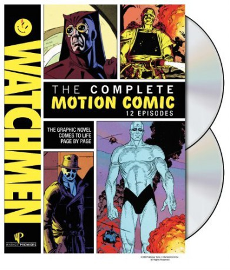

")
 
 IMDB-Wertung: 8.6 / 10
IMDB-Wertung: 8.6 / 10  Metascore:
Metascore: 
Eine fiktive Version der USA in den 1980ern. Der Kalte Krieg dauert an, die Russen sind noch die außenpolitischen Gegner. Superhelden sind seit einem Anti-Superheldengesetz aus den 1970er Jahren, dem Keene-Act, verboten. Die ersten von ihnen waren nach dem Sensationserfolg des ersten Superman-Comics Ende der 1930er Jahre aufgetreten: maskierte Verbrecherjäger ohne große Fähigkeiten, die sich später als die „Minutemen“ zusammentaten – und bis zu den 1950er Jahren nach und nach freiwillig oder unfreiwillig in den Ruhestand traten. Anfang der 1960er entstand eine neue Generation, mit neuen technischen Fähigkeiten und zum Teil auch tatsächlichen Superkräften. Sie gerieten in den 1970ern durch ihre Selbstjustiz in die Diskussion und wurden durch den Keene-Act zuletzt vor die Alternative gestellt, zurückzutreten oder für die Regierung zu arbeiten. Einige hörten damals schlicht auf (Nite Owl II, Silk Spectre II), andere arbeiten seither in der Forschung (Dr. Manhattan) oder im Geheimdienst (Comedian), einer (Ozymandias) ließ die Maske öffentlich fallen und verdiente damit ein Vermögen, einer (Rorschach) ging in den Untergrund und bekämpft – von der Polizei gesucht, von den Medien totgeschwiegen – das Verbrechen weiter.
Jahr: 2008
Dauer: 26 Minuten
FSK:
Land: USA Studio: Warner Home VideoTonspuren: DTS - ,
Untertitel: Englisch,
Auflösung: 720p (1280x720) Größe: 1075 MB
Genre: Drama, Sci-Fi, Fantasy, Animation/Trick, TV-Serie
Regisseur: Richard Zangrande Gaubert, Chris Gregory, Jake Strider Hughes
Drehbuch: Dave Gibbons, Alan Moore
Soundtrack:
Darsteller:
Datei: X:\Comic-Trick\Watchmen Motion Comic\Watchmen.2009.EP01.mkv seit 25.11.2015
Festplatte: Comicverfilmungen+MusikCD
 Alle Filme aus Gruppe 'Comic-Trick\Watchmen Motion Comic'
Alle Filme aus Gruppe 'Comic-Trick\Watchmen Motion Comic'